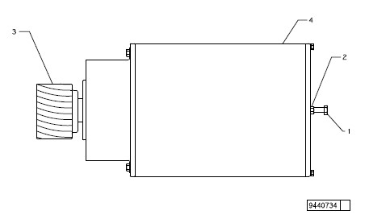
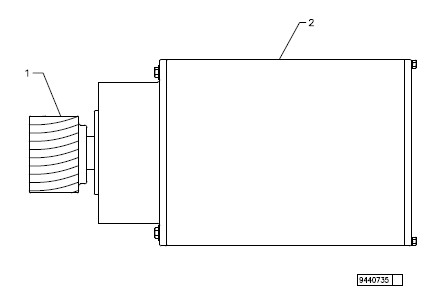
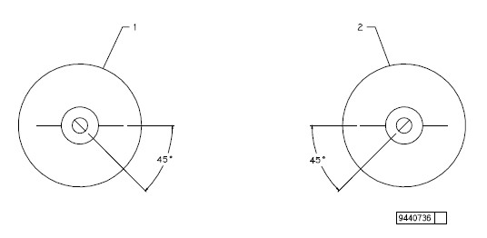

The coupling is a flexible type and can be damaged by excessive force.
The cylinder motor has a timing mark scribed on the rotor shaft and motor case as shown in figure 17.

1 |
Bolt, 0.375in NC x1.50in |
2 |
Jam Nut, 0.375in |
3 |
Right Hand Pinion Gear |
4 |
Cylinder Motor |
During rotation of the rotor shaft, the cylinders will also rotate and all other motors will be moved to their timed positions.
The hose barb will stay attached to the hose and can be reused on the new cylinder motor.
The cylinder motor weighs 113 kg (250 lb). To prevent potential injury by lifting cylinder motor by hand, use a lifting jig (BW Papersystems part number 9446283) and fork truck.
Be sure to note the position of any shims on the motor mounting plate. The shims must remain in the same position during reassembly.
During cylinder motor removal, damage to Knife components could occur from residual oil spilled from the motor. Use extreme care when removing cylinder motor to prevent spilling oil.

1 |
Left Hand Pinion Gear |
2 |
Cylinder Motor |
The timing mark on rotor shaft must be within 4° of the motor scribe mark for the cylinder motor to run efficiently.

Shim thickness is stamped on Knife frame side plates in thousandths of an inch.
1 |
Dial Indicator |
Do not cut armature leads. The leads must remain at their original lengths. Excess wire can be stored in wireway.
The coolant level should be at least halfway on the sight gauge when the cooling system is cold. Additional coolant may need to be added after the system has run and the air has been purged (see General Checks Schedule in Maintenance section) through the clear hose located between the return manifold and the reservoir.
If stud from old cylinder motor is worn, replace stud.
Apply Loctite 242 on stud threads.
1 |
Stud |
2 |
Nut |
3 |
Cylinder Motor |
1 |
Cylinder Motor |
2 |
Dial Indicator |